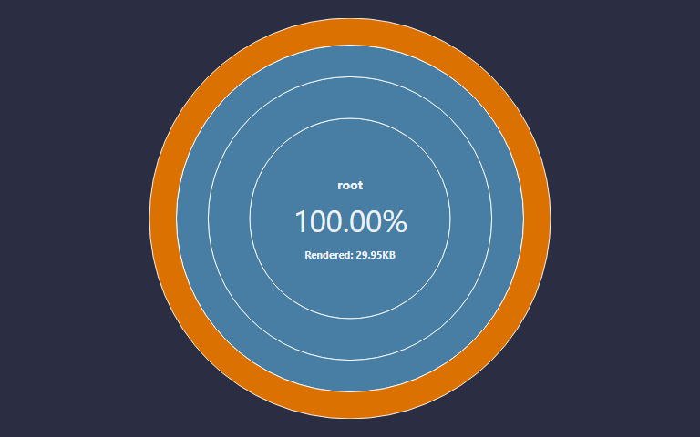
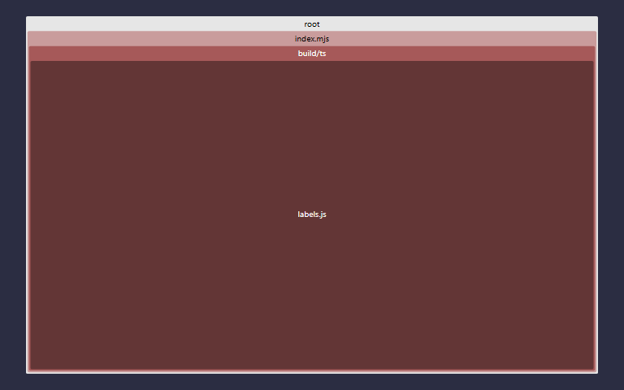
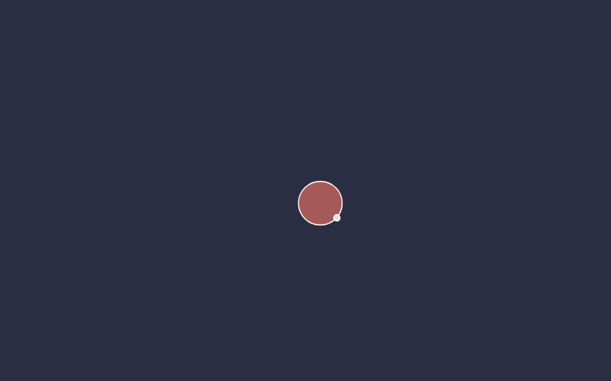
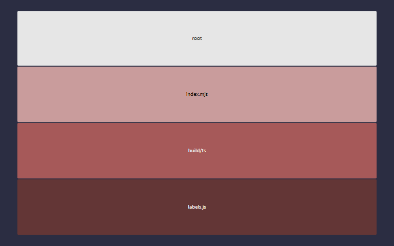

issue_labels
issue_labels v0.2.0
Version 0.2.0 was built on Tuesday, May 26, 2026 at GMT-07:00
1779812163989from hashe3cbe76.
A general-purpose 286-label issue taxonomy for GitHub projects — 20 categories, 55 subcategories — paired with a 3D force-directed colorer that places each label as a point in the sRGB cube so visually-similar labels indicate semantically-related concerns.
What's in here
src/data/standard_issue_label.json— the taxonomy itself, one label per line, in the canonical serialized form. This is the artifact most consumers want.src/build_js/assign_label_colors.cjs— headless Node baker. Runs a force simulation in the sRGB cube and writes each label's settled position back as itscolorfield. Also emitsdocs/colors_trajectory.json(the animation samples).src/build_js/visualize_colors_3d.cjs— generator fordocs/colors_3d.html, the in-browser three.js sim. Multi-tier springs (label → subcategory centroid → category centroid), constellation links, live sliders, spin rig, hover info, "export colors" button.src/build_js/bake_colors.cjs— takes a{ name: "#hex", ... }map (the in-browser export) and writes the new colors back into the taxonomy JSON, preserving the canonical serialization.
The 20 categories: Type · Infrastructure · Component · Status · Estimation · Meta · Needs · Quality · Language · Outreach · Documentation · Significance · Testing · Platform · AI · Stakeholder · Pipeline · Business · Localization · Legal.
Usage
npm install
npm run viz # bake colors (overwrites stored colors), then regenerate the HTML
npm run viz:html # regenerate ONLY the HTML; preserves whatever's currently stored as `color`
npm run bake exported.json # apply an in-browser export back to the taxonomy
The seed → live → export → bake loop:
npm run vizbakes a starting set of colors using the headless Node simulation.- Open
docs/colors_3d.htmlin a browser. The in-browser sim runs more sophisticated physics (multi-tier springs, sub-sub floor, constellation links). The page'sseed()randomizes positions per page-load (respecting per-channel pins), so the browser starts from a random state, not the storedcolors. - Drag sliders, let it settle, click export colors — the result is on the clipboard as
{ name: "#hex" }. - Save that to a file and run
npm run bake path/to/exported.jsonto write it back into the JSON. - From here, refresh the HTML with
npm run viz:html— NOTnpm run viz. The latter re-runs the baker and overwrites the colors you just baked in.
Test status
| Count | Statement | Branch | Func | Line | |
|---|---|---|---|---|---|
| Unit | 29 | 66.66% | {{unitbranch}}% | {{unitfunc}}% | {{unitline}}% |
| Stochastic | 4 | 66.66% | {{stochbranch}}% | {{stochfunc}}% | {{stochline}}% |
| Docblock count | 50% | |
|---|---|---|
| Docblock coverage | 2 | 50% |

 |
 |
 |
 |